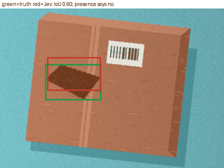
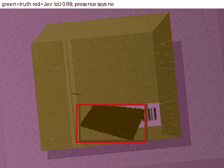
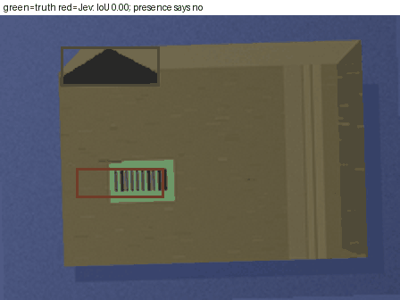
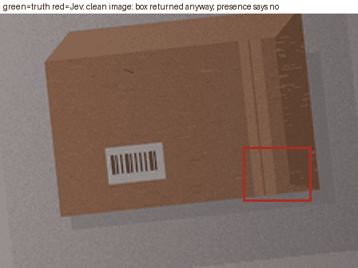

PARCEL NETWORKS · VISIBLE DAMAGE TRIAGE
More evidence.
Clearer limits.
Can a small learned model decide which parcel images need a second look?
Procedural study only. 4,800 generated scenes. Zero real photographs. Real-world accuracy is untested; production auto-clear is disabled.
01 / THE ACCEPTANCE BAR
Claims registered before training
Every verdict uses the predeclared success rule. Intervals are 95% percentile intervals from 1,000 scene-bootstrap resamples. A negative result stays visible.
| Claim | Measured result | Verdict |
|---|
SUPPORTED: the whole interval passes. NOT SUPPORTED: a point estimate fails. INCONCLUSIVE: remaining uncertainty or missing data. These engineering rules are not multiplicity-corrected hypothesis tests.
02 / BASELINES, LEARNING & ABLATIONS
What changed when the model learned?
| Model | Precision | Recall | F1 | ROC AUC [95% CI] | AP | Brier ↓ |
|---|
All metrics are binary and image-level. Always review is the trivial baseline. Classical means the retained pixel detector flags any region. Learned models use fixed multiscale pixel summaries with trained linear or 32-unit neural heads; no pretrained backbone. Ablations remove spatial layout or intensity normalization.
Reliability on this split
03 / A REVIEWER'S WORKLOAD
The threshold is an operating choice.
Sensitivity analysis on frozen test predictions. Moving this control does not retune the model or change its registered verdicts.
| Assumed damaged share | False reviews | Missed damage | Total reviews |
|---|
Prevalence is an assumption. Conditional error rates come from synthetic images. No financial savings or live-network benefit was measured.
04 / LOOK AT THE FAILURES
What would a reviewer see?
The gallery includes confidently flagged clean images, missed damage and controls. These examples expose failure modes; overall performance uses all 900 scenes per split.
This is an image classifier. The optional box comes from the generator; it is not a learned prediction. Review other sides and the physical parcel where visibility is poor. The displayed clear/review decision is a simulation; production auto-clear is disabled.
05 / WHERE PERFORMANCE CHANGES
Damage, severity and lighting
| Slice | Condition | N | Recall [95% CI] | Clean alarms / 1,000 [95% CI] |
|---|
Damage-type and severity rows contain positives only, so recall is reported. “None” is the clean severity. Lighting and tape slices contain both classes. Severity means programmed rendering strength. Slices are exploratory and may share images.
06 / THE ITERATION STORY
A bounded experiment, with a stopping rule.
Split before rendering
2,400 train / 600 validation / 900 test / 900 shifted. Unique scene seeds and file hashes; no related crops cross splits.
Learn and validate
Two linear and two neural regularizations. Choose checkpoints, temperatures and thresholds on validation. Fit two diagnostic ablations.
Freeze, then test
Persist models, hashes and thresholds before reading test features. One final pass per frozen model. Keep every result.
| Candidate | Validation F1 | Validation AUC | Best epoch | Outcome |
|---|
07 / WHAT THIS DOESN'T ESTABLISH
The next gate is real data.
- No real photographs were tested. No synthetic-to-real transfer claim is supported.
- Same-generator tests can reward rendering shortcuts. The held-out style is also procedural.
- Only one parcel and one binary label per image. Learned localization, damage type and severity estimation were not tested.
- Labels express generated damage intent, which tape can partially hide. No independent human annotation audit.
- Calibration and error rates may change with camera, background and prevalence. Intervals omit retraining uncertainty.
- No live workflow trial, verified local vision-model comparison or dollar savings.
Before operational use: acquire a licensed real capture set, annotate it independently, split by physical parcel and session, and evaluate a frozen model against the actual review budget.
08 / A GENERAL IMAGE MODEL, TRIED ONCE
Jev image model EXPERIMENTAL
Jev is an image model I did not train. A picture goes in; out comes either a yes/no answer or a Box, a rectangle drawn around the target. TypeSafe, who make it, mark both image input and Box as experimental, so I tested them that way: model jev-1.14.0, 150 synthetic parcel images, one fixed prompt, one run, nothing tuned.
| Test | My trained model | Jev | What it means |
|---|---|---|---|
| Damage yes/no, score out of 100 (AUC) | 96 | 76 | Jev catches about 1 in 6 damaged parcels (recall 17%), with no false alarms (0 clean parcels flagged). |
| Box: share of boxes that overlap the true damage by at least half | my model cannot draw boxes | 59% | Share of the 75 damaged parcels whose box overlaps the true damage by at least half (IoU of 0.5 or more). |
| Box: typical (median) overlap with the true damage | not available | 54% | A fixed box in the middle of the picture gets a typical overlap of 7%. These are two different measures: compare 54% with 7%, never 59% with 7%. |
| Clean parcels | not applicable | 75 of 75 got a box anyway | The Box step always answers, so a yes/no presence check must come first. |
| Speed per picture | not measured here | 0.15 s | Median over 300 calls from a PC; 95th percentile 0.26 s. |
| Cost per picture, in tokens | none (runs on my own computer) | about 698 input | The service reports tokens, not money. |
Four examples: Jev's box against the truth




Green is the truth from the generator; red is Jev's box. All four parcels are synthetic.
Verdict. Jev's Box is promising for locating damage. It is not yet a replacement for a model trained on your own pictures.
Limits of this test
- One run with one fixed prompt; I did not check whether Jev gives the same answer if asked again.
- The API refused the original small images, so every parcel was sent enlarged 2x.
- Synthetic parcels only; real photographs could behave very differently, in either direction.
- Box is scored against one generator box per damaged image, and a blurred stain can make that box larger than the visible mark.
Inspect the evidence
Everything runs locally. No trackers, remote fonts, uploads or external inference.
Measured JSONRegistered planIteration logData & licence searchFull report & intervalsError contact sheet

Gallery images and generator annotations: original procedural work, CC0 1.0. External dataset records were researched but no external images are redistributed. No real-data accuracy is implied by a dataset's published metrics.